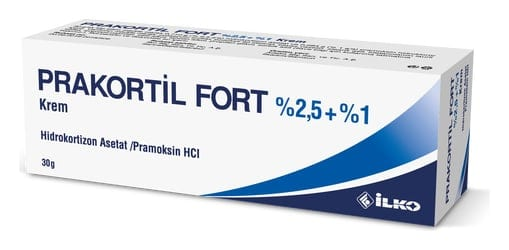

Prakortil Fort %2.5 + %1 Krem, 30 Gram

Ne için kullanılır
KT · Bölüm 1PRAKORTİL FORT, haricen kullanıma yönelik beyaz renkli kremdir. Zayıf etkili kortikosteroidlerle diğer kombinasyonlar olarak adlandırılan bir ilaç grubuna dahildir. Etkin madde olarak 30 gramında 0.710 g (% 2.5 a/a) hidrokortizon asetat ve 0.284 g (% 1 a/a) pramoksin hidroklorür içerir. Pramoksin hidroklorür, lokal anestezik (bölgesel olarak uyuşturan) etkisi olan bir bileşiktir. PRAKORTİL FORT, karton kutu içerisinde 1 adet plastik kapaklı 30 gramlık alüminyum tüpte kullanıma sunulmaktadır. PRAKORTİL FORT, • kortikosteroidlere duyarlı kaşıntılı deri hastalıklarının tedavisinde kullanılır, • anal (makat) bölgede lokalize, ağrı, kaşıntı ve iritasyon (rahatsızlık hissi) gibi bulgularla seyreden enfekte olmayan hemoroid (basur) ve anal bölgenin diğer hastalıklarında kısa süreli olarak (5-7 günü geçmeyecek şekilde) kullanılır, • anüs (makat) ve rektuma ait bölgede iltihaplı çatlakların tedavisinde, hemoroid veya kaşıntılı anüs (makat) ile ilişkili oluşan ağrı ve ödemde kullanılır.
Bu ilacı kullanmaya başlamadan önce bu KULLANMA TALİMATINI dikkatlice okuyunuz, çünkü sizin için önemli bilgiler içermektedir. • Bu kullanma talimatını saklayınız. Daha sonra tekrar okumaya ihtiyaç duyabilirsiniz. • Eğer ilave sorularınız olursa, lütfen doktorunuza veya eczacınıza danışınız. • Bu ilaç kişisel olarak sizin için reçete edilmiştir, başkalarına vermeyiniz. • Bu ilacın kullanımı sırasında, doktora veya hastaneye gittiğinizde doktorunuza bu ilacı kullandığınızı söyleyiniz. • Bu talimatta yazılanlara aynen uyunuz. İlaç hakkında size önerilen dozun dışında yüksek veya düşük doz kullanmayınız.